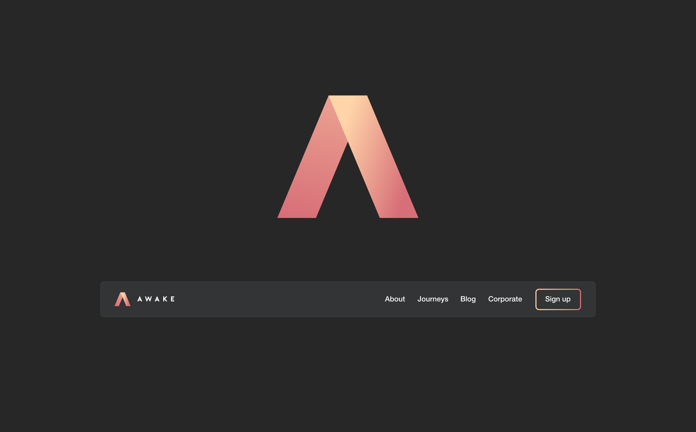
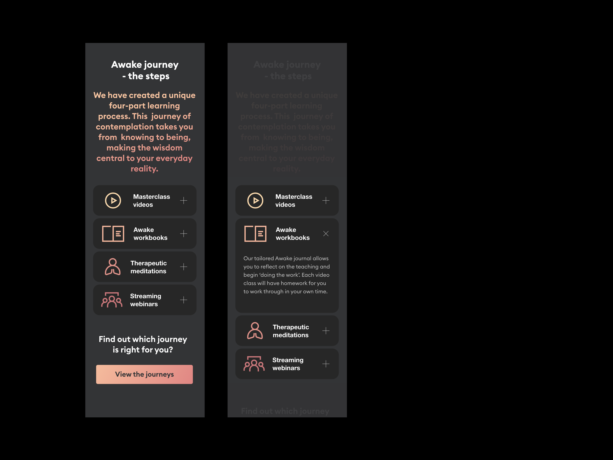

Charterhouse Lagos
A school being built in Nigeria with an extensive British Heritage. Distinctly British but intrinsically African.

Experimentation with various forms of chat dialogues and speech bubbles.

Here is one of several flows created, primarily to direct focus onto content areas and requirements. Color coding is utilized to create a visually pleasing and easily identifiable distinction between each area.

Health Optimisation Infographic blah blah blah

I suggested we had a glossary of terms and therapies to help people understand more about the benefits and therapies, this would also be helpful from an SEO perspective.
The glossary navigation demonstrates interaction here demonstrates navigating through various therapy types.

Introducing a captivating testimonial concept: users share their feedback about the product through an audio clip, while their image gradually unveils in sketched form. This unique approach subtly emphasises the app's ability to give users back their voice and a healthy image of themselves.

You can see here how the journey artwork integrates into the wider body of the website along with showing other required user interface elements.

A conceptual visual looking at how the interface design might work and align with the brand mark I created. I suggested that the code for the gradient button be genetly moving across the face of the button to create a gentle fire embers like feel.
